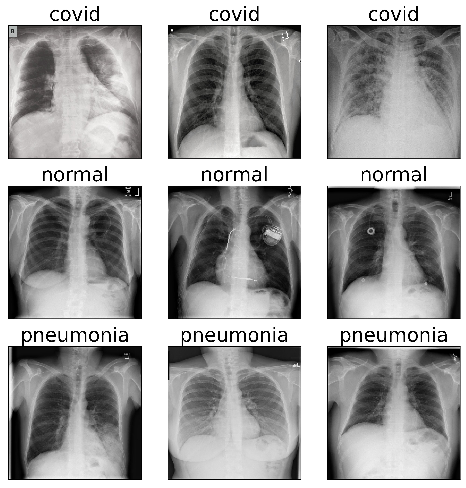
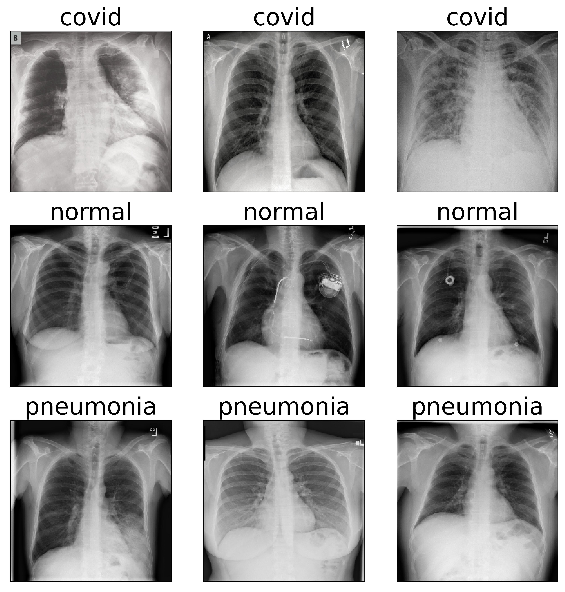

No file chosen, yet!
You are expected to upload an RGB image to be able to
use this service, you can see samples of the input images on
the right side, click on 'Choose a file' to upload your image
then click 'Diagnose'
The diagnosis result will be shown
in the right bottom blue section along with the confidance of
that diagnosis, an image with a highlighted area on which the
diagnosis was based will appear in the samples section
Covid-19 detection
{% if path==0 %}
 {% else %}
{% else %}
 {% endif %}
{% endif %}
File name here
{% if res_img %}
 {% else %}

{% endif %}
{% else %}

{% endif %}
{% if p %}
{{p}}
{% else %}Input samples
Differentiate between Covid-19, Pneumonia and the normal case
from chest x-ray images
The diagnosis result will be
shown in the right bottom blue section along with the
confidance of that diagnosis
An image with a highlighted
area on which the diagnosis was based will appear in the
samples section